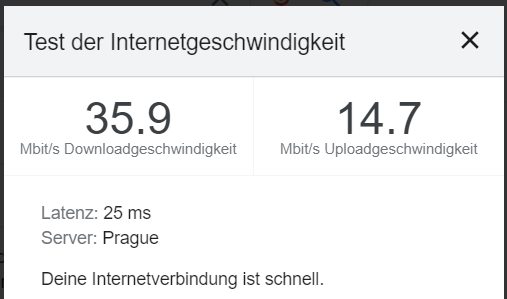
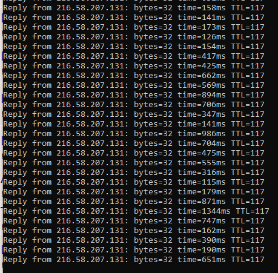
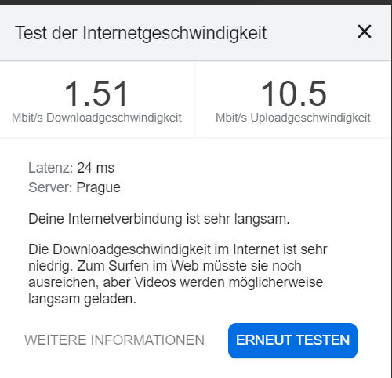

Mobiles Internet / Geschwindigkeit langsam / Ping hoch
Shepherd44
Hallo Magenta Community,
Ich habe schon seit einigen Jahren die Mobile Internet Box von Magenta mit einer ~50Mbit/s Verbindung.
Lief soweit in Kärnten alles gut und fast Störungsfrei.
Seit covid und seitdem ich in Wien lebe sieht es jedoch ganz anders aus.
Mir ist bewusst durch die Home Office Situation vieler Firmen sind viele Netze sehr belastet und zu gewissen Zeiten muss man mit Engpässen rechnen.
Doch bei mir ist es seit 3-4 Monaten extrem schlimm geworden.
Teilweise nicht mal 500 kbyte/s download und ein 2000er ping.
Vor 2 Monaten war es noch immer am abend so schlimm und tagsüber gings dann aber seit 2 Monaten ist es ganz sporadisch mal auch den ganzen Tag schlimm.
Jetzt war auch unter Störungsabfrage seit 4 Monaten der 1020 Bezirk ständig mit einer Störung drin und heute sehe ich es wird angezeigt :" Keine Störungen bekannt." Da mir der Support nicht weiterhelfen kann und nur die 0815 Floskeln rausdrückt mit "neu starten, updaten oder Gerät tauschen" (was ich bereits Gefühlte 100mal gemacht habe), gibt es andere hier auch mit dem Problem und weiß jemand gibts da etwas wo man es richtig bei Magenta anbringen kann damit da mal was getan wird?
Finde das mobile internet gut weil ich es überall mitnehmen kann. Will jetzt nicht unbedingt auf Festnetz umsteigen nur weil bei denen ein Knotenpunkt wohl überlastet ist und nicht ausgebaut wird.
Naja, bin mal gespannt auf euren Input.
Danke im Vorraus.
Bearbeitet
von Shepherd44
verbesserung
Christian_E
Kannst mal bitte was zu deinen Empfangsdaten sagen?
Wie ist der Empfang?
Hast du mal versucht die Box raus auf das Fensterbrett zu stellen und dann zu testen?
Oder die Box mal mitnehmen und woanders anstecken, damit wir sehen, ob evtl. die Hardware ein Problem hat....
Shepherd44
vor 16 Stunden schrieb Christian_E:
Kannst mal bitte was zu deinen Empfangsdaten sagen?
Wie ist der Empfang?
Hast du mal versucht die Box raus auf das Fensterbrett zu stellen und dann zu testen?
Oder die Box mal mitnehmen und woanders anstecken, damit wir sehen, ob evtl. die Hardware ein Problem hat....
Gut das du das erwähnst. Ja habe alles getestet. Also der Empfang ist eigentlich immer perfekt und immer volle Balken LTE/4G+.
Ich hab tausend fach schon probiert die Box wo anders hinzustellen und es hat an dem Output spürbar relativ nichts geändert was mich darauf schließen lässt, dass es nicht am Standort meiner Box liegen kann. (Sie ist meistens in der nähe von einem Fenster, das ist für mich selbstverständlich, dass ich sie an einem guten Ort platziere)
Ich hatte die Box schon an anderen Standorten mit fast nur 2 Balken und trotzdem eine bessere Download-Geschwindigkeit. Und es is eben sehr sporadisch bzw. man merkt es sehr am Abend wenn alle zu Hause sind oder Vormittag wenn die meisten Online-Meetings statt finden. Würde mich wundern wenn es am Standort liegt, dass einmal 50Mbit möglich sind und dann eine Stunde später nurmehr 5Mbit und dann noch zu bestimmten Zeiten. Was auch nicht unbedingt dafür spricht, dass es die Box sein kann was man natürlich nie ausschließen kann.
Deswegen wollte ich mal die Community fragen ob die ähnliche Erfahrungen haben und eventuell auch ein Erfolgserlebnis oder etwas dergleichen. Die meisten nehmen ja grundsätzlich sofort immer gleich das es nicht an Magenta oder etwas anderem liegen kann.
Bearbeitet
von Shepherd44
Christian_E
Du schreibst - an anderen Standorten (anderen Adressen) hast du bessere Geschwindigkeiten.
Auf deinem Standort aber nicht. Und da schwankt die Geschwindigkeit stark.
OK, dann kann man die Hardware mal ausschließen.
Aber Empfang ist nicht gleich Empfang.
Schau doch bitte mal in das Routermenü und schau, ob du Werte für RSRP und SINR findest?
Bearbeitet
von Christian_E
Shepherd44
vor 9 Minuten schrieb Christian_E:
Du schreibst - an anderen Standorten (anderen Adressen) hast du bessere Geschwindigkeiten.
Auf deinem Standort aber nicht. Und da schwankt die Geschwindigkeit stark.
OK, dann kann man die Hardware mal ausschließen.
Aber Empfang ist nicht gleich Empfang.
Schau doch bitte mal in das Routermenü und schau, ob du Werte für RSRP und SINR findest?
RSRQ: -13dB
RSRP: -81dBm
SINR: -2dB
Gestern in der früh Speedtest gemacht: meine 50Mbit erreicht.
Jetzt Nachtmittag komme ich gerade mal auf 15Mbit. bin in dem Zimmer rumgegangen, es bleibt ähnlich. 10-15Mbit.
Zur Zeit ist mein LAN Kabel nur 2m lang deshalb kann ich die Box nicht weit weg von meinem PC stehen lassen, aber das Fenster ist keine 100cm Luftlinie entfernt.
Andere Position:
RSRQ: -7dB
RSRP: -83dBm
SINR: 5dB
Rexalius2000
Hallo @Shepherd44 und Willkommen in der Magenta Community,
Um was für einen Router handelt es sich dabei?
Shepherd44
vor 1 Minute schrieb Rexalius2000:
Hallo @Shepherd44 und Willkommen in der Magenta Community,
RSRP ist der Signalpegel. Der ist super bei dir - alles gut.
SINR hingegen darf nie unter 0 gehen und sollte wenn möglich zweistellig sein aber zumindest deutlich über +5.
Ist SINR kleiner als 5 oder sogar negativ, deutet das auf massive Störungen beim Signal hin.
Das können Funkstörungen sein aber vielleicht auch einfach viel zu viele Überlagerungen im Signal.
An einem anderen Standort, wo die Geschwindigkeit besser war, war RSRP wahrscheinlich höher (also schlechter) aber SINR auch höher (und damit besser).
Der Router ist OK.
GGfs. könnten wir da mal mit HuaCtrl ein anderes Band fixieren. (ist eine App unter Android)
In welchen Band bis du denn da drinnen?
Hast du ein aktuelles Smartphone und die SIM-Karte vom Router in diesem schon eingelegt?
Der Huawei B529 kann maximal 2 LTE Frequnzen bündeln, eventuell erreichst du mit einem aktuelleren Router eine bessere Geschwindigkeit.
Shepherd44
vor 1 Minute schrieb Christian_E:
Der Router ist OK.
GGfs. könnten wir da mal mit HuaCtrl ein anderes Band fixieren. (ist eine App unter Android)
In welchen Band bis du denn da drinnen?
Gestern war es 4G+, heute zeigt er LTE an.
Christian_E
Es geht nicht um LTE - es geht um das Band.
Mit der App HuaCtrl kannst du testen, welche Bänder bei dir zur Verfügung stehen.
B20 ist ein Band in 800 Mhz und oft komplett überlastet.
Gut wäre B3 mit 1800 oder B1 mit 2100 MHz oder eben Bänder in noch höheren Frequenzen.
Die kannst du fixieren und dann hast bessere Geschwindigkeiten.
RSRP wird da ggfs. schlechter aber SINR ziemlich sicher besser.
Rexalius2000
Gerade eben schrieb Shepherd44:
Gestern war es 4G+, heute zeigt er LTE an.
Für mich schaut das so aus das, das empfangbare LTE Frequenzband(möglicherweise Band 20 und Band 3) überlastet ist. Aber wie Christian schon angemerkt hat könnte man mit dem Tool HuaCtrl auf ein anderes wechseln. In Wien sollte sicher Band7-2600MHz verfügbar sein. Eine Kombination mit Band 3+Band 7 könnte eine vorübergehende Lösung sein.
Shepherd44
vor 1 Minute schrieb Rexalius2000:
Sind die Fenster Metall beschichtet ?
Hast du ein aktuelles Smartphone und die SIM-Karte vom Router in diesem schon eingelegt?
Der Huawei B529 kann maximal 2 LTE Frequnzen bündeln, eventuell erreichst du mit einem aktuelleren Router eine bessere Geschwindigkeit.
Fenster kann ich absolut ausschließen, ist eine Altbau Wohnung mit sehr sehr großen Holz-Fenstern, nur sehr kleinen Holzrahmen und sehr großen Fensterscheiben. Fenster sind ~2m hoch. Es ist ein weiterer WLAN-Internet-Router in der Wohnung nebenan. Vielleicht das der stört?
Rexalius2000
Gerade eben schrieb Shepherd44:
Fenster kann ich absolut ausschließen, ist eine Altbau Wohnung mit sehr sehr großen Holz-Fenstern, nur sehr kleinen Holzrahmen und sehr großen Fensterscheiben. Fenster sind ~2m hoch. Es ist ein weiterer WLAN-Internet-Router in der Wohnung nebenan. Vielleicht das der stört?
Wenn du über LAN verbunden bist also über Kabel kann man eine Störung von WLAN ausschliesen.
Shepherd44
vor 4 Minuten schrieb Christian_E:
Es geht nicht um LTE - es geht um das Band.
Mit der App HuaCtrl kannst du testen, welche Bänder bei dir zur Verfügung stehen.
B20 ist ein Band in 800 Mhz und oft komplett überlastet.
Gut wäre B3 mit 1800 oder B1 mit 2100 MHz oder eben Bänder in noch höheren Frequenzen.
Die kannst du fixieren und dann hast bessere Geschwindigkeiten.
RSRP wird da ggfs. schlechter aber SINR ziemlich sicher besser.
Ok, das muss ich dann morgen mal installieren wenn ich mehr Zeit habe.
verstehe ich das richtig, ich prüfe mit der App welche netze verfügbar sind und gebe dass dan Magenta weiter damit die das fixieren oder kann ich das auch selber am Router machen?
Bearbeitet
von Shepherd44
Rexalius2000
vor 5 Minuten schrieb Shepherd44:
Ok, das muss ich dann morgen mal installieren wenn ich mehr Zeit habe.
verstehe ich das richtig, ich prüfe mit der App welche netze verfügbar sind und gebe dass dan Magenta weiter damit die das fixieren oder kann ich das auch selber am Router machen?
Nein, du prioresierst die LTE Frequnzbänder selbst. Um so höher die Frequenz um so mehr Leistung kannst du bekommen, vorrausgesetzt in deiner Wohnung sind diese empfangbar. Hast du zufällig ein aktuelles Samsung Smartphone?
Bearbeitet
von Rexalius2000
Christian_E
vor 14 Minuten schrieb Shepherd44:
Ok, das muss ich dann morgen mal installieren wenn ich mehr Zeit habe.
verstehe ich das richtig, ich prüfe mit der App welche netze verfügbar sind und gebe dass dan Magenta weiter damit die das fixieren oder kann ich das auch selber am Router machen?
Nein
So nicht.
Schau mal den Beitrag von Rexalius - also du schaust mit der App, welches Band bei dir verfügbar ist - kannst auch einen Speedtest machen und dann dieses Band oder auch mehrere fixieren.
Dann kann der Router nicht mehr auf ein zwar stärkeres Band (B20 als Beispiel) wechseln und du hast ziemlich sicher eine bessere Speed.
Aber zuerst müssen wir wissen, auf welchem Band du im Moment bist und das siehst du auch mit dieser App.
Shepherd44
vor 5 Stunden schrieb Rexalius2000:
Nein, du prioresierst die LTE Frequnzbänder selbst. Um so höher die Frequenz um so mehr Leistung kannst du bekommen, vorrausgesetzt in deiner Wohnung sind diese empfangbar. Hast du zufällig ein aktuelles Samsung Smartphone?
Gibt es außer der HuaCtrl App von "TheCoder" auch eine andere ähnlich gute App?
Der Verfasser der App scheint seine konstenlose version aus dem App Store genommen zu haben. Sie ist nurmehr als 9,99€ version verfügbar.
Rexalius2000
Ohh stimmt ,früher war die kostenlos aber versuch es mal
Hier
(Ohne Gewähr).
Check aber zuerst welche Frequnzbänder bei dir verfügabr sind. Mit einem aktuellen Samsung Smartphone mit der Tastenkombination *#0011# oder alternativ mit dem Tool
Netmonster
. Es muss sich eine SIM von Magenta,HoT etc. in deinem Smartphone befinden.
Bearbeitet
von Rexalius2000
Shepherd44
vor einer Stunde schrieb Rexalius2000:
Ohh stimmt ,früher war die kostenlos aber versuch es mal
Hier
(Ohne Gewähr).
Check aber zuerst welche Frequnzbänder bei dir verfügabr sind. Mit einem aktuellen Samsung Smartphone mit der Tastenkombination *#0011# oder alternativ mit dem Tool
Netmonster
. Es muss sich eine SIM von Magenta,HoT etc. in deinem Smartphone befinden.
So ihr müsst mir jetzt weiterhelfen. Habe es geschafft die App über Umwege als APK zu installieren
Mit der 0011 bekomme ich nur einen Stack der nicht viel sagt.
Mit Netmonster zeigt er auch nicht viel mehr an, weiß nicht ob das so sein soll oder wo man alle Bänder angezeigt bekommen soll
Und in HuaCtrl sehe ich wie folgt.....
das hier ist mein Handy -> Das hier ist Netmonster ->
Momentan bin ich wie es aussieht im B3 - 1800Mhz Band.
Rexalius2000
Stelle mal auf Hua Ctrl auf Band 3+Band 7. Bitte beachte das die Signalqualität schlechter werden kann oder der Router sich nicht mehr bis du auf das alte Frequnzband wechselst nicht mehr einwählt. Sollte sich der Router auf B3+B7 einwählen versuche mal einen Speedtest
https://www.netztest.at/de/
.
NTM
vor 26 Minuten schrieb Shepherd44:
das hier ist mein Handy -> Das hier ist Netmonster ->
Laut den Screenshots bist du am Handy nur im Band 7.
Wenn das Handy im W-Lan hängt, nutzt es nur ein Band, um Akku zu sparen.
Und wenn es nicht im W-Lan wird auch nur ein Band verwendet, wenn praktisch keine Daten fließen, um Akku zu sparen.
Bearbeitet
von NTM
Shepherd44
vor 25 Minuten schrieb Rexalius2000:
Stelle mal auf Hua Ctrl auf Band 3+Band 7. Bitte beachte das die Signalqualität schlechter werden kann oder der Router sich nicht mehr bis du auf das alte Frequnzband wechselst nicht mehr einwählt. Sollte sich der Router auf B3+B7 einwählen versuche mal einen Speedtest
https://www.netztest.at/de/
.
Hab jetzt NUR Band3+Band7 ausgewählt und ein Speedtest sagt:

überraschend etwas besser als vorhin den ganzen Tag.
Da kam ich höchstens auf 20 Mbit/s Download aber meistens 10-15Mbit/s Download.
Zahlen tu ich für 50Mbit/s aber hauptsache es funktioniert und ich warte keine 3 Minuten für einen Seitenaufbau und kann nebenbei Youtube oder Netflix gucken auf 4k und nicht auf 360p
Mich hat vor 1 oder 2 Jahren mal wer von Magenta angerufen ob ich auf 100Mbit/s erhöhen will (oder wars per Email, keine Ahnung).
Jedenfalls wurde gesagt, ich kanns ja mal testen und wenns mir nicht gefällt wieder zurück schalten.
Hatte in meiner anderen Wohnung immer schöne 45-48 Mbit/s.
Dann nach der Umstellung (mir wurde gesagt es kann 1-2 Tage dauern bis es sich einpendelt), hatte ich nurmehr 12 Mbit.
Und auch nach 2 Tagen war es nicht besser. Schade eigentlich. Hätte das "schneller" gerne genommen.
Danke an ALLE für die Tipps bisher!
Mal schauen wies weitergeht
Rexalius2000
Super das es jetzt schneller ist. Möglicherweise bekommst du mit einem anderen Router der mehr Frequenzen Bündeln kann noch mehr an Geschwindigkeit. Wenn du mal wieder Hilfe benötigst, melde dich einfach nochmals bei uns ansonsten viel Spaß jetzt beim surfen
Shepherd44
Hallo Magenta Community,
Ich habe schon seit einigen Jahren die Mobile Internet Box von Magenta mit einer ~50Mbit/s Verbindung.
Lief soweit in Kärnten alles gut und fast Störungsfrei.
Seit covid und seitdem ich in Wien lebe sieht es jedoch ganz anders aus.
Mir ist bewusst durch die Home Office Situation vieler Firmen sind viele Netze sehr belastet und zu gewissen Zeiten muss man mit Engpässen rechnen.
Doch bei mir ist es seit 3-4 Monaten extrem schlimm geworden.
Teilweise nicht mal 500 kbyte/s download und ein 2000er ping.
Vor 2 Monaten war es noch immer am abend so schlimm und tagsüber gings dann aber seit 2 Monaten ist es ganz sporadisch mal auch den ganzen Tag schlimm.
Jetzt war auch unter Störungsabfrage seit 4 Monaten der 1020 Bezirk ständig mit einer Störung drin und heute sehe ich es wird angezeigt :" Keine Störungen bekannt." Da mir der Support nicht weiterhelfen kann und nur die 0815 Floskeln rausdrückt mit "neu starten, updaten oder Gerät tauschen" (was ich bereits Gefühlte 100mal gemacht habe), gibt es andere hier auch mit dem Problem und weiß jemand gibts da etwas wo man es richtig bei Magenta anbringen kann damit da mal was getan wird?
Finde das mobile internet gut weil ich es überall mitnehmen kann. Will jetzt nicht unbedingt auf Festnetz umsteigen nur weil bei denen ein Knotenpunkt wohl überlastet ist und nicht ausgebaut wird.
Naja, bin mal gespannt auf euren Input.
Danke im Vorraus.
Bearbeitet
von Shepherd44
verbesserung
Christian_E
Hey super!
Dann hat es was gebracht. Freut mich und wenn du wieder was brauchst - einfach melden.
Christian_E
Was mich jetzt aber noch sehr wundert....
Die war bis letzte Woche im Google App Store sicher kostenlos drinnen und wurde erst diese Woche mal raus genommen.
Das ist echt schräg - aber vielleicht kommt sie auch ganz schnell wieder rein.
Sonst gibt es m.E. keine Alternative als GUI Version.
Christian_E
Hab diesbezüglich den Entwickler der HUA Ctrl angeschrieben.
Es stimmt - es gibt nur noch die Pro Version und die kostet gleich mal knappe 10€.
Schon schräg.
Alternativen gibt es leider kaum, was mich auch sehr wundert - nur auf der Commandline kann man das noch handeln aber das ist gar nicht so easy.
Wird Zeit, dass es dafür andere Apps gibt. Ich würde auch zahlen aber die 10€ kommen mir ungewöhnlich hoch vor für eine App.
Shepherd44
Hallo Magenta Community,
it'sa me it'sa Mario
ne Quatsch, Christian hier.
Also mein Internet lief die ganze Woche eigentlich prima.
Heute 8.July ab späten Nachmittag und jetzt besonders ab 22:00 Uhr merke ich wieder besonders, dass die Geschwindigkeit spürbar zu langsam wird.
Mit HuaCtrl geprüft, war im B3 1800 Band, (Config is B3+B7). Hab ein umswitchen auf B7 erzwungen, aber das hat nichts gebracht.
Mein Ping:

Meine Geschwindigkeit:

Is halt blöd wenn ich grad nebenbei was mit 500kb/s downloade und dann noch ein Tutorial (Video auf Udemy) anschauen möchte was vielleicht 2Mb/s benötigt.
Band: B7-2600
RSSI: -53dBm
RSRQ: -11dB
RSRP: -83dBm
SINR: 1 bis 6 dB
Was würdet ihr mir als nächsten Schritt raten? Box tauschen?
Wie wahrscheinlich ist es dann, dass ich mit einer neueren Box mit großen Unterschieden rechnen kann?
Also ich werds eh irgendwie überleben aber is halt schon nervig paar Tage im Monat echt nichts wirklich vernünftig machen zu können mit so ner Verbindung.
Christian_E
Hi,
Box tauschen wird glaub ich nicht viel bringen, denn das sieht eher nach Überlastung aus und durch die Optimierung passieren dann auch die Latenzen.
Wahrscheinlich ist es heute in der Früh wieder gut - oder?
Deine Empfangswerte sind auch OK - wenngleich SINR Störungen anzeigt aber das alleine kann nicht die Ursache sein.
Hast du mal versucht B1 und B3 zu kombinieren?
Ansonsten - ja da dürfte bei dir einfach zuviel im Netz los sein.
Shepherd44
Ach du meine Güte. Wenn man denkt es könnte nicht schlimmer werden......
Seit mehren Tagen, ja Wochen nun bin ich mit 2Mb/s unterwegs. Lade ich nebenbei einen Patch herunter der mehr als 5GB groß ist, dann ist alles andere am stehen. Internseiten brauchen Minuten zum öffnen. Ping ist oben auf 12.000, Youtube kannste knicken, nichtmal 360p wird geladen, also man ist einfach wieder wie im Jahre 1995. Egal welches Band.
Habe mich daherhegend entschieden den Internet-Vertrag zu kündigen und einen anderen Provider auszuprobieren. Das ist bei mir leider ein Deal-Breaker wenn man mit 1Mbit/s im Jahre 2021 und das mitten in der Stadt herumkämpft. Da ist ja nichtmal anständiges Home Office möglich. Da hätte man echt innerhalb der letzten 12 Monate was dagegen machen können und das Netz besser ausbauen. Aber naja. Hilft nix. Was anderes bleibt mir nicht übrig.
Trotzdem vielen Dank für euren Input und eure Hilfe. Hab wieder einiges dazugelernt.
Bearbeitet
von Shepherd44
Christian_E
Ja ich kanns bestätigen.
Auch bei mir ist die LTE Verbindung am Abend am Boden.
Im Moment sind viel zu viele im Netz aber das ist um diese Zeit im Jahr leider schon normal. Da wird es auch bei anderen Providern nicht viel anders aussehen.
Ich weiß das wird dir jetzt nicht helfen aber es ist leider einfach nur der Gleichzeitigkeitsfaktor, der das Netz in die Knie bringt.
Shepherd44
vor 8 Stunden schrieb Christian_E:
Ja ich kanns bestätigen.
Auch bei mir ist die LTE Verbindung am Abend am Boden.
Im Moment sind viel zu viele im Netz aber das ist um diese Zeit im Jahr leider schon normal. Da wird es auch bei anderen Providern nicht viel anders aussehen.
Ich weiß das wird dir jetzt nicht helfen aber es ist leider einfach nur der Gleichzeitigkeitsfaktor, der das Netz in die Knie bringt.
Ja stimmt, aber je nach Bezirk und je nach Standort haben einige Provider besser ausgebaute Nodes und weniger Probleme als andere. Wer das bessere Netz hat kann ein Kunde natürlich nur schwer herausfinden und hat meist nicht viel mit den Karten die diese bewerben zu tun. Es wird in anderen Regionen bestimmt genau umgekehrt sein.
Ich kann ja in einige Monaten berichten wie meine Erfahrungen sind. Muss nur noch schauen wie lange meine Kündigungsfrist ist. Ich denke es sind immerhin 3 Monate.
Bearbeitet
von Shepherd44
Rexalius2000
Du kannst sich auch über die RTR App informieren welches Netz bei dir mehr Leistung erbringt. Speed Test von anderen Kunden können dazu sehr aussagekräftig sein. Grundsätzlich kann es aber nach ein paar Tagen oder Monaten wieder anders ausschauen, wenn das Netz durch weiteren Usern stark beeinflusst wird. Kündigungsfrist ist, wenn nicht anders vereinbart 1 Monat zum Monats letzten. Wenn du z. B. heute kündigst, ist dein derzeitiger Vertrag mit 31.12.2021 deaktiviert.
Bearbeitet
von Rexalius2000
Christian_E
vor 3 Stunden schrieb Shepherd44:
Ja stimmt, aber je nach Bezirk und je nach Standort haben einige Provider besser ausgebaute Nodes und weniger Probleme als andere. Wer das bessere Netz hat kann ein Kunde natürlich nur schwer herausfinden und hat meist nicht viel mit den Karten die diese bewerben zu tun. Es wird in anderen Regionen bestimmt genau umgekehrt sein.
Ich kann ja in einige Monaten berichten wie meine Erfahrungen sind. Muss nur noch schauen wie lange meine Kündigungsfrist ist. Ich denke es sind immerhin 3 Monate.
Ja Erfahrungen sind immer interessant.
Hoffe du findest eine für dich gute Lösung.
LG Christian
Marc2021
Am 2.7.2021 um 22:39 schrieb Rexalius2000:
Stelle mal auf Hua Ctrl auf Band 3+Band 7. Bitte beachte das die Signalqualität schlechter werden kann oder der Router sich nicht mehr bis du auf das alte Frequnzband wechselst nicht mehr einwählt. Sollte sich der Router auf B3+B7 einwählen versuche mal einen Speedtest
https://www.netztest.at/
de/
{kind=link}
{kind=link}
{kind=link}
{kind=link}